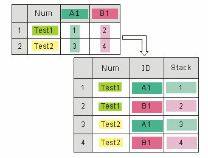

Arbeitsblattspalten stapeln
Wks-Stacking-Cols
Spalten nach Spaltenbeschriftung auswählen
Das Hilfsmittel zum Stapeln von Arbeitsblattspalten dient der Konvertierung von Daten vom Rohmodus in den Indexmodus. Im ursprünglichen Datensatz gehören Stichproben zu verschiedenen Gruppen, die in verschiedenen Spalten gespeichert sind. Nach dem Stapeln befinden sie sich in verschiedenen Zeilen in der gleichen Spalte mit einer zusätzlichen Spalte im Arbeitsblatt mit den Gruppeninformationen (der Gruppe aus der die Stichprobe stammt).
Um diese Funktion zu verwenden:
- Öffnen Sie ein neues Arbeitsblatt mit Eingabedaten.
- Markieren Sie ausgewählte Daten.
- Wählen Sie Restrukturieren: Spalten stapeln im Origin-Menü, um den Dialog wstackcol zu öffnen.
Die X-Funktion wstackcol wird aufgerufen, um die Funktion auszuführen.
Bedienelemente des Dialogs
| Neu berechnen |
Legen Sie fest, wie die Ergebnisse neu berechnet werden.. Einzelheiten lesen Sie unter Neu berechnen von Analyseergebnissen.
|
| Zu stapelnde Spalte(n) eingeben |
Bestimmen Sie die Spalten, von denen die Quelldaten stammen. Es sollten mindestens zwei Spalten sein.
|
| Gruppenidentifikation |
-
Zeile(n) gruppieren
- Wählen Sie die Spaltenbeschriftungszeile, die die Gruppeninformation enthält. Mit dieser Information identifiziert das Hilfsmittel die Gruppe, zu der die Stichprobe gehört. Falls mehrere Zeilen ausgewählt werden, wird die gewählte Reihenfolge der Gruppen im unteren Textfeld angezeigt.
|
| Optionen |
Die Stapeloptionen
-
Andere Spalte(n) einbinden
- Bestimmen Sie, ob andere Spalten in die Ausgabe eingebunden werden. Ist dieses Kontrollkästchen aktiviert, können Sie die einzubeziehenden Spalten auswählen.
-
In Untergruppen stapeln
- Bestimmen Sie, ob die Stichproben in mehrere Untergruppen gestapelt werden sollen. Falls dies nicht ausgewählt ist, werden alle Eingabestichproben in einer Spalte gespeichert. Wenn dieses Kontrollkästchen ausgewählt ist, können Sie die Anzahl der Untergruppen oder Anzahl der Spalten, in die die Stichproben gestapelt werden, festlegen.
- Angenommen, es gibt 6 Gruppen in den Originaldaten und Sie entscheiden, diese in zwei Untergruppen zu stapeln. Dann befinden sich die erste, dritte und fünfte Gruppe in der ersten Untergruppe während sich die restlichen Gruppen in der zweiten Untergruppe befinden.
-
Nach Zeilen stapeln
- Bestimmen Sie, ob Stichproben verschiedener Gruppen verknüpft werden.
- Angenommen es gibt zwei Gruppen in den Originaldaten und diese Option ist ausgewählt. Dann sind die geraden Zeilen in der Ausgabespalte Stichproben der ersten Gruppe und die ungeraden sind Stichproben von der zweiten Gruppe. Ist dieses Kontrollkästchen nicht ausgewählt, sind die ersten n Zeilen in der Ausgabespalte (n ist die Anzahl der Stichproben der ersten Gruppe) Stichproben aus der ersten Gruppe und die restlichen Zeilen enthalten Stichproben aus der zweiten Gruppe.
-
Fehlende Zeilen ausschließen
- Bestimmen Sie, ob Zeilen, die fehlende Werte in der Quellspalte enthalten, ignoriert werden sollen.
|
| Ausgabeeinstellungen |
-
Langname der Gruppenspalte
-
Bestimmen Sie den Langnamen der Gruppenspalte. Optionen:
-
<Gruppenzeilenheader>
- Die Kopfzeile, aus der die Gruppeninformationen stammen. Mit anderen Worten die Auswahl unter Zeile(n) gruppieren (siehe oben).
-
Gruppe
- Gruppe n.
-
Klasse
- Klasse n.
-
Langname der Datenspalte
- Geben Sie den Langnamen für die Ausgabespalte an. Der Langname wird nummeriert.
-
Ausgabearbeitsblatt
- Legen Sie das Ausgabearbeitsblatt für die Ergebnisse fest.
|
Wie Spalten gestapelt werden
Diese Funktion kann Spalten nach Zeilen stapeln. Sie erlaubt außerdem das Einbeziehen von anderen Spalten und das Festlegen der Anzahl von Untergruppen. Kombiniert ergeben sich so mehrere Möglichkeiten, Spalten zu stapeln.
- Werte aus verschiedenen Spalten werden in mehreren Zeilen in einer Gruppe gestapelt.

- Stapeln von Spalten nach ihren Zeilen anstelle des Stapelns von Spalten untereinander Diese Option verschachtelt die Werte der Spalten.
- Stapeln und Andere Spalte(n) einbinden
- Diese Art des Stapelns bindet andere Spalten aus dem Originalarbeitsblatt zu den neu gestapelten Spalten im neuen Arbeitsblatt ein.

- Nach Zeilen stapeln und Andere Spalte(n) einbinden
- Spalten werden nach den Zeilen gestapelt und nicht gestapelte Spalten werden aus dem Originalarbeitsblatt eingebunden.
- 
- Mehrere Spalten werden in zwei oder mehr Untergruppen gestapelt.

- Nach Zeilen stapeln und In Untergruppen stapeln
- Mehrere Spalten werden in zwei oder mehr Untergruppen nach ihren Zeilen gestapelt.

- In Untergruppen stapeln und Andere Spalte(n) einbinden
- Mehrere Spalten werden in zwei oder mehr Untergruppen gestapelt und nicht gestapelte Spalten werden aus dem Originalarbeitsblatt eingebunden.

- Nach Zeilen stapeln, In Untergruppen stapeln und Andere Spalte(n) einbinden
- Mehrere Spalten werden in zwei oder mehr Untergruppen nach ihren Zeilen gestapelt und nicht gestapelte Spalten werden aus dem Originalarbeitsblatt eingebunden.

Beispiel
Im folgenden Beispiel werden Spalten einer Beispieldatei so gestapelt, dass sie in einer anderen Form dargestellt wird.
- Öffnen Sie die Datei \Samples\Statistics\Body.ogw.
- Markieren Sie die Spalten B, C und D im Arbeitsblatt Male und wählen Sie anschließend Worksheet: Spalten stapeln im Origin-Menü, um den Dialog wstackcol zu öffnen.
- Aktivieren Sie die Kontrollkästchen Andere Spalte(n) einbinden und Nach Zeilen stapeln. Alle anderen Einstellungen bleiben unverändert.
- Klicken Sie zum Ausführen auf OK. Sie erhalten folgendes Ergebnis:
Spalten nach Spaltenzuordnung stapeln
Wir können Arbeitsblattspalten auch nach Spaltenzuordnung (Zeichnung) stapeln. Der X-Funktions-Dialog coljoinbydesig ist von diesem Menü aus nicht verfügbar, kann aber in der Bedienoberfläche geöffnet werden:
- Klicken Sie auf das Menü Fenster und öffnen Sie das Skriptfenster oder Befehlsfenster.
- Geben Sie auf diese Aufforderung Folgendes per Kopieren-Einfügen oder über die Tastatur ein und drücken Sie Enter:
coljoinbydesig -d
Die Verwendung der Dialogelemente ist einfach:
- Eingabe sind die Arbeitsblattdaten, die Sie nach Spaltenzuordnung stapeln möchten.
- Ausgabe ist das Ziel, wo Sie die gestapelten Daten ausgeben möchten (neues Blatt, neue Mappe etc.).